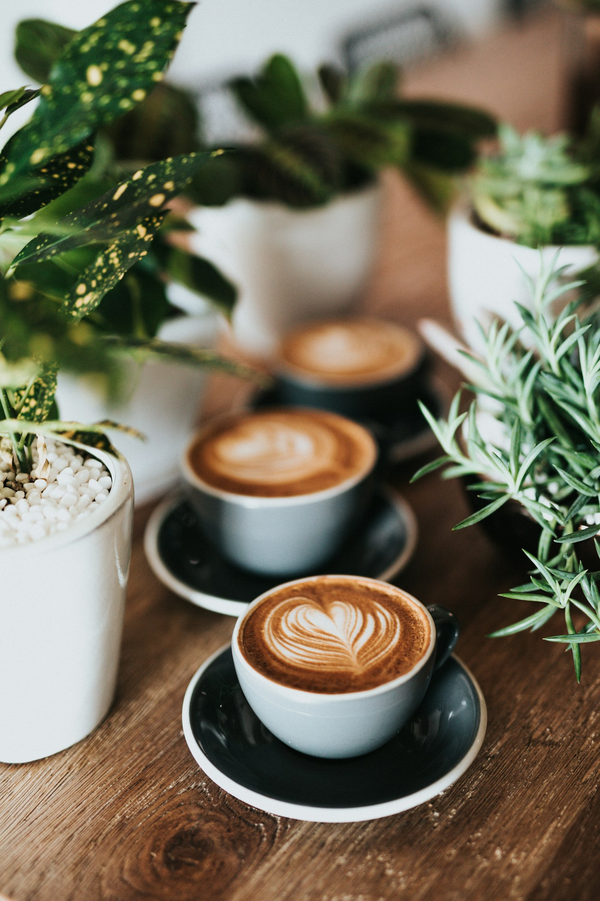
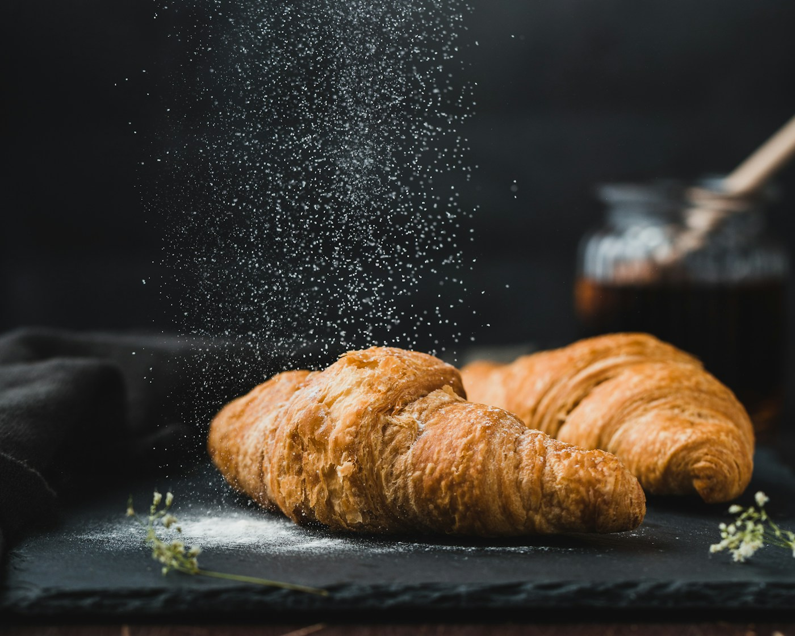
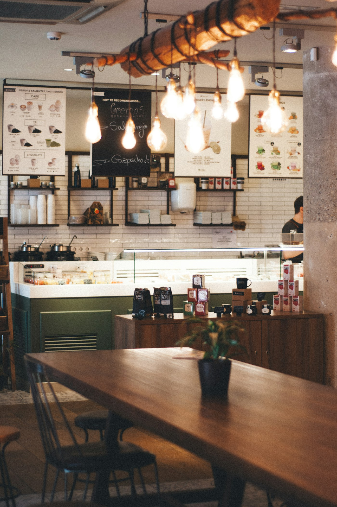

ВАШ МАЛЕНЬКИЙ РИТУАЛ
Хороший день
начинается
с тёплого.
С чашки любимого кофе, хрустящего круассана
и нескольких минут только для себя.
Кофе. Разговоры. И никуда не спешить.

здесь и сейчас✳
02 / ЗНАКОМСТВО СО ВКУСОМ
Начните с этого
Три акцента нашего демо-меню.
Каждый — повод сделать паузу.

простые вещи.особенное тепло.
03 / ИСТОРИЯ ОДНОГО УГОЛКА
Место, где можно
просто быть.
В основе «Тёплого угла» — простая идея: у каждого должно быть место для небольшой передышки. С книгой, другом или собственными мыслями.
Для этой вымышленной кофейни мы придумали утренний свет, деревянные столы и меню без лишней суеты. Именно так выглядит наша история — пока только на экране.
Кофе под настроение
От крепкого эспрессо до нежного рафа.
Время для себя
Завтраки, мягкий свет и уютные уголки.
04 / ВЗГЛЯНИТЕ ВНУТРЬ
Уют — в деталях
Визуальное настроение кофейни.
Фотографии для иллюстрации концепции.


05 / ПАРА ПОДРОБНОСТЕЙ
Хороший вопрос
Это настоящая кофейня?
Нет. «Тёплый угол» — вымышленный бренд, созданный для демонстрации дизайна и разработки сайта. Меню, история, цены и адрес — демонстрационные.
Есть ли растительное молоко?
В демо-меню можно представить овсяное или кокосовое молоко с доплатой 300 ₸. Реальной продажи здесь нет.
Где посмотреть состав и аллергены?
Нажмите на любую позицию меню. В карточке указаны состав, порция и основные аллергены. Данные приведены для демонстрации.
Можно ли оформить заказ или забронировать стол?
На этом сайте нет заказов, бронирования и оплаты. Он не собирает персональные данные.
Здесь мог бы быть наш адрес
г. Алматы, ул. Уютная, 12
Вымышленный адрес, не для навигации
Часы работы по концепции
Пн–Пт · 08:00–21:00
Сб–Вс · 09:00–22:00
Настоящих телефона и почты нет.
Приезжать по этому адресу не нужно.